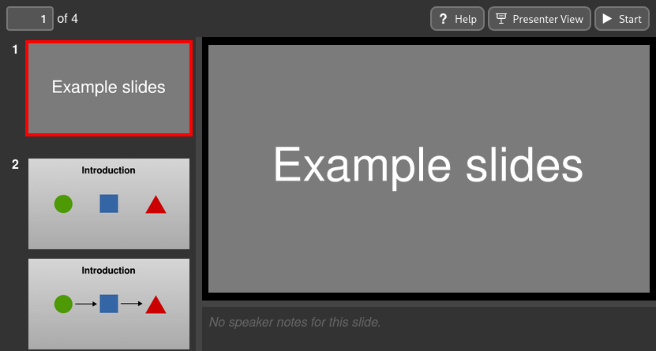
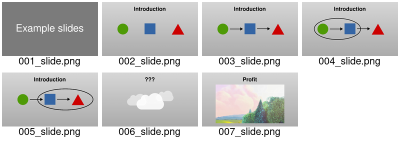

slidie command¶
The slidie command is used to build a slide show from a set of source SVG
files.
Usage is as follows:
$ slidie [SOURCE ...] [--output OUTPUT]
If the source is omitted, Slidie will look for slide SVGs in the current directory. Otherwise, the source can be a directory name (containing numbered SVG files) or an explicit list of SVG files (which need not be numbered and will be combined in the order given).
Tip
The ability to specify individual SVG files to render can be useful when you’re iterating on one slide within a much larger slide show. This way you can avoid recompiling every slide.
The output filename defaults to out.xhtml and the extension chosen controls
the output format produced. Supported extensions are .xhtml, .pdf and
.png. See the sections below for details of the various formats.
Supported output formats¶
Slidie supports several output formats suitable for different purposes:
- XHTML
A standalone, single-file, fully-offline browser-based slide viewer application. The most feature complete output format. Also includes utilities such as a presenter view.
A bog-standard PDF file, universally viewable and good for public distribution. Lacks support for more dynamic content (e.g. videos).
- PNG
Simple (bitmap) image files, one per slide. Useful for importing into (e.g.) video editors or other forms. Obviously lacks selectable/searchable text as well as support for more dynamic content (e.g. videos).
Feature |
XHTML |
PNG |
|
|---|---|---|---|
Static SVG graphics |
✔ [1] |
✔ |
✔ |
Embedded fonts |
✔ |
✔ |
✔ |
Importable into other tools |
– |
✔ |
✔ |
Slide builds |
✔ |
✔ |
✔ |
Hyperlinks (including between slides) |
✔ |
✔ |
– |
✔ |
– |
– |
|
✔ |
– [2] |
– |
|
✔ [3] |
– |
– |
|
✔ [3] |
– |
– |
XHTML¶
The XHTML output format generates a completely self-contained slide viewing and presenting application which can be opened directly by modern browsers with no need for a web server or internet connection.
Note
Slidie generates XHTML, not HTML. The XHTML directly includes full (XML-based) SVG files and depends on XML processing features not available in regular HTML documents.
Whilst the XHTML viewer application can be hosted on a web server, it is
designed to function correctly when loaded directly from a file:// URL.
The generated file is entirely self-contained, including all slide graphics, fonts and the viewer application and should be openable on other systems.
Warning
An exception is if your SVGs reference external files (rather than embedding them), the generated XHTML viewer will also reference, rather than embedding those files. In this case you’ll need to take care to keep the viewer and these files together.
Note
Unfortunately there is not a straightforward mechanism to do automatic font embedding in the general case due to the need to convert fonts to web fonts. Instead, Slidie converts all slide text to paths which ensure correct display on any system. To enable accessability and selectability, invisible text elements are overlaid on top.
See also
- The Slidie XHTML Viewer
See for more information on using the XHTML viewer application.
PDF¶
The PDF output format is fairly self explanatory but includes a few noteworthy features:
Slide-oriented page numbering based on slidie’s link syntax.
Document title, author and date metadata taken from the first slide’s metadata.
Table-of-contents based on slide metadata.
Image de-duplication (an image included on multiple slides will only be stored once in the PDF file).
Font embedding.
PNG¶
The PNG output format writes each build step each of slide to an individual PNG file.
The resolution of the generated PNGs may be overriden from the default of 96
DPI using the --png-dpi argument.
By default, PNGs will be rendered with fully-opaque backgrounds. This may be
overridden using the --png-background-opacity argument.
The generated PNGs are assigned ascending numbers (starting from 1).
By default a NNN_ prefix is added to the supplied filename where NNN is
the three-digit zero-padded number assigned to that file. Alternatively, if the
filename contains a valid Python format string placeholder for an integer (e.g.
{:03d}), the specified filename template is used instead.
Note
The generated PNG file numbers bear no relationship with the source SVG file numbers.